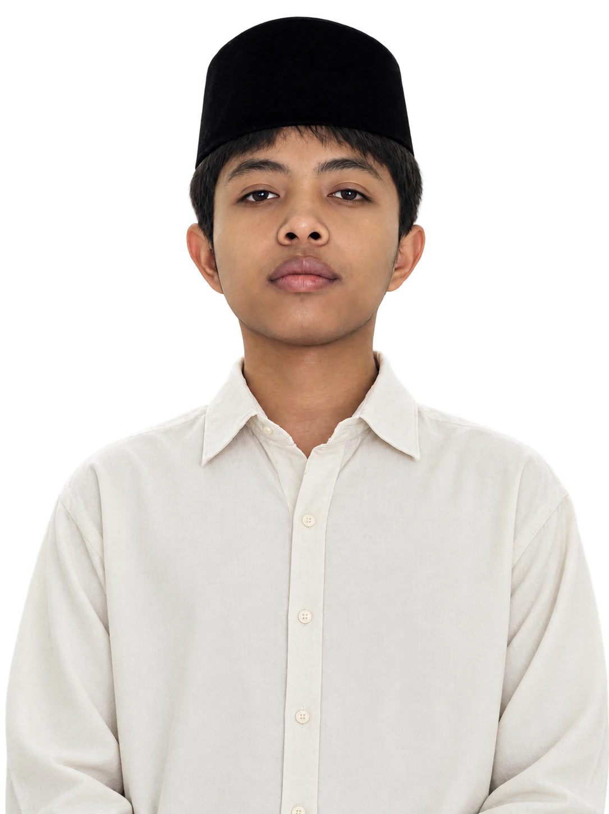

PERSONAL PORTFOLIO WORK IN PROGRESS
Belajar.
Membangun.
Berbagi proses.
Ruang untuk mendokumentasikan hal-hal yang saya pelajari, gagasan yang saya uji, karya yang saya bangun, dan pelajaran yang saya temukan sepanjang prosesnya. Saat ini: sebuah proyek website baru sedang dalam pengerjaan.
Tidak harus sudah sempurna untuk mulai mendokumentasikan.

THE IDEA
Proses juga layak dicatat.
Saya percaya karya bukan hanya hasil akhir. Di baliknya ada pertanyaan, percobaan, keputusan, revisi, dan hal-hal yang dipelajari. Website ini menjadi tempat untuk merapikan jejak proses tersebut—dan membagikan bagian yang mungkin berguna bagi orang lain.
SELECTED DIRECTIONS
Hal yang sedang saya bangun.
Digital projects
Website, sistem digital, dan eksperimen yang mengubah gagasan menjadi sesuatu yang bisa digunakan. Satu proyek website baru sedang berjalan.
Strategy & content
Perencanaan, riset audiens, strategi media sosial, dan proses mengembangkan konten.
learn
repeat
Experiments & learning
Eksperimen, catatan proses, dan pelajaran dari hal-hal yang sedang dipelajari.
Kategori di atas adalah arah pengarsipan awal, bukan klaim bahwa seluruh proyek telah selesai atau menghasilkan capaian tertentu.
FIELD NOTES
Catatan dari proses yang berjalan.
Tempat untuk merapikan pemikiran, pertanyaan, dan hal yang saya pelajari. Tulisan akan ditambahkan seiring proses dokumentasi.
Jelajahi notesMulai dari apa yang ada. Dokumentasikan dengan jujur. Perbaiki seiring berjalan.
STAY CONNECTED
Masih dalam proses.
Dan memang itu intinya.
Website ini akan tumbuh seiring karya, pengalaman, dan pembelajaran yang terdokumentasi.
Hubungi saya